The feel
This is early 3D realism with the dirt left in. On the PS2, IGN wrote in 2001, Silent Hill 2 had become "more realistic looking" and was "covered with an incredible amount of grit and dirt".1 Max Payne's walls were photographs that Remedy's artists took in rough neighbourhoods,2 and Silent Hill 2 ran a noise filter over its frames for what its producer called "a cinematic feeling".3
It works by withholding. Silent Hill 2's team used fog and darkness so that "you don't know what is out there", and the fear is "of something abstract".4 The faces are nearly real,1 which brings its own unease: Takayoshi Sato, the game's character artist, has written that the better rendered a model is, the weirder it tends to look when it lacks emotion.5 Manhunt adds a grainy filter meant to make a major studio's game look cheaply made, like the snuff film it pretends to be.6
- damp
- nicotine
- sodium light
- film grain
- rust
- bad memories
Where it comes from
The PlayStation 2 launched in Japan in 2000 with a fixed-function graphics chip that was very fast at what it did, and only 4 MB of video memory.7 Silent Hill 2's producer, Akihiro Imamura, said it drew translucency fast, which gave the game its fog and shadows, but had too little memory for high-quality character models and textures.3 Remedy used photographs for every texture in Max Payne (2001),2 and Rockstar North set Manhunt (2003) in one of America's "run-down, broken rust-belt towns" and shot its executions as grainy, hand-held camcorder footage.8,9 Indie horror now returns to the era on purpose: Nathan Hamley, who made Hollowbody largely alone, limited it to diffuse textures and low-poly models inspired by PS2 hardware.10
Core elements
Photographic textures
Surfaces start as photographs of real decay. Remedy sent its artists into rough neighbourhoods, then used the photos as the basis for Max Payne's textures, taking the unwanted light information out of them.2 Hollowbody's developer worked the same way, from his own photos, photo libraries and urban decay photography.10
Layered translucent fog
The PS2 drew translucency fast, and Silent Hill 2 spent that speed on fog and shadow.3 Fatal Frame II put fog across the whole screen for a subtle sense of depth.11 When the PS3 HD Collection showed Silent Hill's distances clearly, art director Masahiro Ito blamed the PS3's weak point with translucent textures such as fog and mist.12
Noise filters over the frame
The picture is damaged on purpose. Silent Hill 2 runs a noise filter for "a cinematic feeling",3 Fatal Frame II strengthens dither and contrast pixel by pixel so a place feels gradually more unpleasant,11 and Manhunt's grainy filter makes a major studio's game look cheaply made.6
Torchlight and moving shadows
Silent Hill 2 is full of dark, unlit places,3 so the torch matters. Its producer rated the flashlight above the fog: as a spot light, it makes a monster's shadow on the wall grow as the monster approaches.3 Takayoshi Sato, who directed the game's cinematics, says artists design more for shadows than for shape.5
Near-realistic faces
Faces aim at realism without the budget for it. Silent Hill 2's team worked from quick sketches and faces captured from films, because it "didn't have that kind of money" for scientific methods,1 and made every facial animation by hand.13 Max Payne's face, limited by the technology of the time, had no animation at all, just three swappable expressions.14
Film and painting references
The references come from cinema and art more than games. Sato lists Jacob's Ladder, David Lynch, Hitchcock, David Fincher and David Cronenberg, and the painters Francis Bacon, Andrew Wyeth and Rembrandt, for a team that mostly didn't grow up playing games.1 Sam Lake wanted a film-noir, hard-boiled feel for Max Payne,14 and Manhunt sets out to resemble a fabled snuff film.6
How to do it
Set a PS2 frame size
Render close to NTSC size and output interlaced. Crash Bandicoot: The Wrath of Cortex used 640 by 448 frames, Final Fantasy X 512 by 416 and Kingdom Hearts 512 by 447, and the imperfections of CRT screens helped hide the interlacing.7
Texture from photographs
Photograph decaying surfaces or take them from photo libraries, and give each one a single diffuse map. The PS2 had no built-in normal maps or PBR shading, and most games used diffuse maps alone.10 Take the baked-in light out of each photo first, the trick Remedy needed to make Max Payne's photo textures work.2
Keep models low-poly
Keep models as low-poly as you can and add geometry only on hero assets, such as puzzle pieces and inventory items.10 In Rodrigo Copetti's PS2 examples, a character takes 2,226 triangles in Crash Bandicoot: The Wrath of Cortex, 2,700 in Dragon Quest VIII and 2,744 in Kingdom Hearts.7
Add fill lights and a torch
Fill rooms with non-shadow-casting lights tinted in subtle colours, then add a few key lights for focal points and anything the player can use.10 Make the torch a spot light, so a monster's shadow grows on the wall as it comes closer.3
Add fog and screen filters
Lay fog across the whole screen for depth, then raise dither and contrast pixel by pixel to build a gradual unpleasantness, as Fatal Frame II did.11 The PS2 could also blend the previous frame into the new one,7 and Silent Hill 2's team added small touches of motion blur and particles.4
Grade the colour and add grain
Light with the colour grade switched on: Hollowbody's grade is heavy, so much of its lighting was tuned through it.10 Then add film grain, which simulates the random texture of photographic film. Set its strength, and reduce it in bright areas so the noise sits mostly in the shadows.15
Tell the story in posed photographs
Stage photo shoots with colleagues, friends and family as the cast, then run the photos through watercolour filters, as Remedy did for Max Payne's comic panels.14 Reworking the story then meant a day or two of new images instead of a week of cinematics.2
Cheat sheet
Do
- Photograph decaying places yourself, for references and for textures.10
- Make the torch a spot light, so a threat's shadow swells on the wall as it approaches.3
- Study films and paintings, not only other games.1
- Give faces flaws: uneven eyebrows, one cheek sagging, a skull slightly distorted.5
- Tell the story in posed photographs instead of cutscenes, as Max Payne did.14
Avoid
- Clearing the fog. When the Silent Hill HD Collection showed a clearer view, the series' art director Masahiro Ito called it poor.12
- Normal maps and PBR materials. The PS2 had no built-in support for them, and most of its games used diffuse maps alone.10
- Mistaking it for the PS1 look. Sato recalls characters on the first 3D consoles at under 500 triangles, with 16-colour, 128 by 128 textures;5 the PS2 characters Copetti counts run past 2,000 triangles, with perspective-correct texturing instead of the older affine mapping.7
- Shock in place of dread. Silent Hill 2's producer wanted anxiety that builds little by little, not fear by surprise.3
- Copying Silent Hill beat for beat. Hamley still hears that Hollowbody is too derivative, and calls homage "a bit like playing with fire".10
Tools and tutorials
- ambientCG
Free CC0 photo textures to downscale and tile.
- Unity URP post-processing
Bloom, film grain, vignette and channel mixer, all in one Volume.
- Silent Hill 2: Enhanced Edition
Restores fog, soft shadows and post-processing to the PC version, with comparison shots against the PS2.
- PCSX2
Run your own discs at native resolution and capture frames to study.
Palette
Sampled from Silent Hill 2, Manhunt, Max Payne and Resident Evil 4. Notice how little saturation there is. The only thing close to white is a light source.
Feel the vibe
In motion
Listen
Guitar, drum machine and heartbreak.
YouTubeA slow cello theme for a game its writer wanted to feel like film noir.14
YouTubePounding electronics and sub bass. One reviewer heard 1970s synth horror in Manhunt's music, down to John Carpenter's Halloween.9
YouTubeWorn and tired rather than sweet.
YouTubeThe quiet side of the score. Sato said the team wanted players to cry at the emotional scenes, not only to be scared.1
YouTubeStatic as music. Yamaoka said the game's radio noise was "really contributing to creating fear".13
YouTube
More references
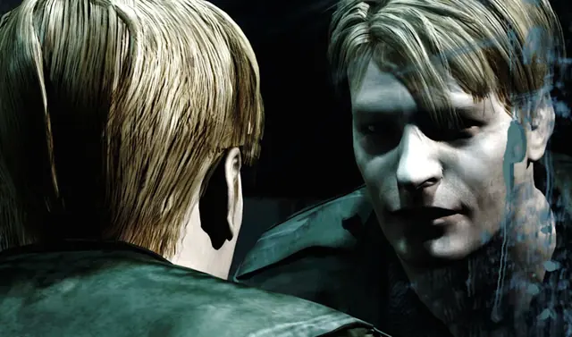
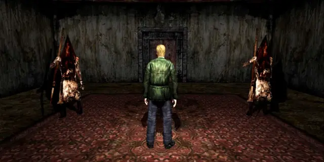
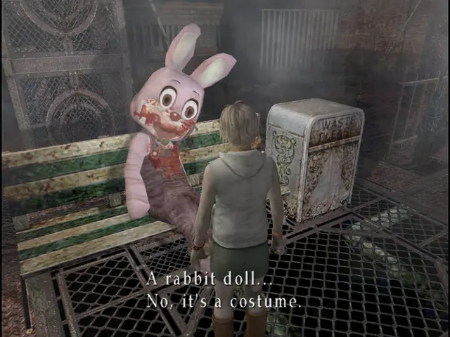
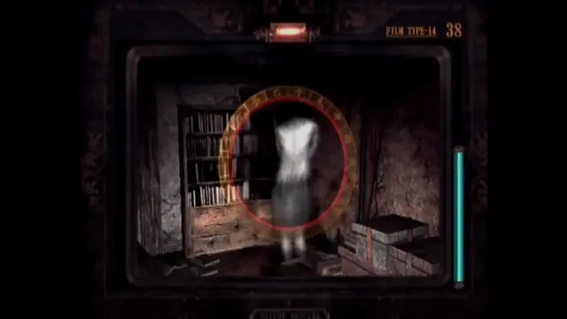
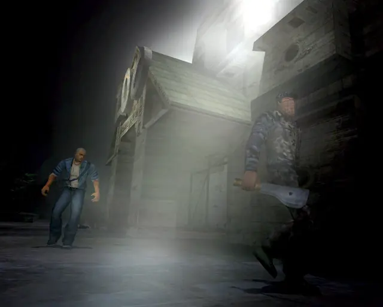
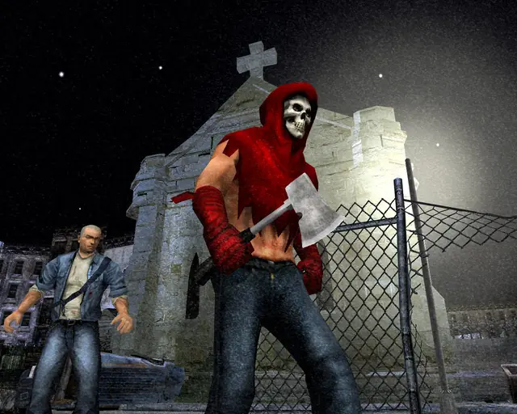
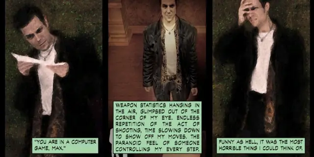
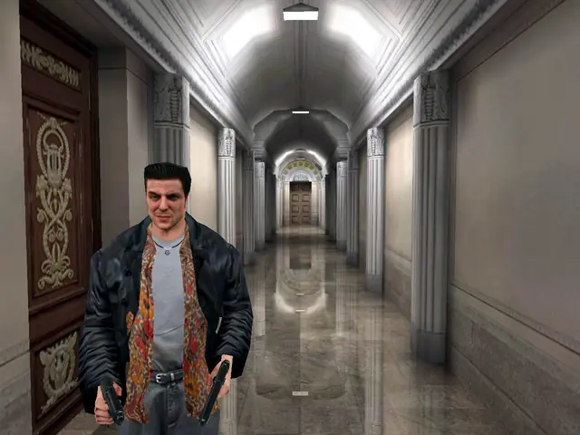
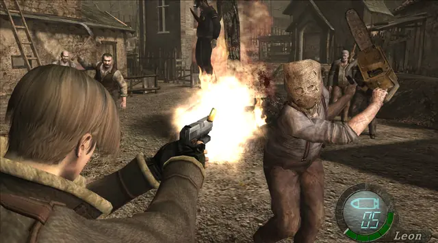
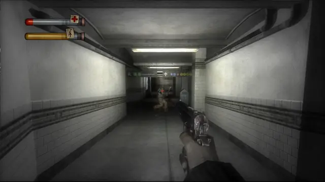
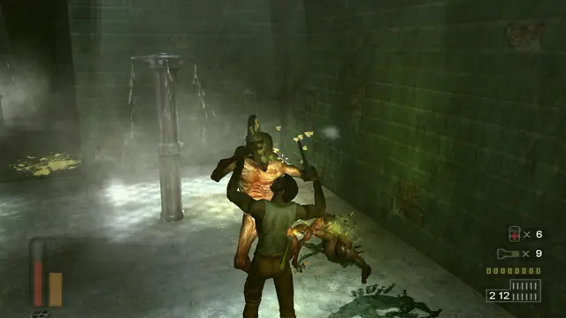
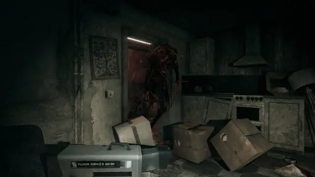
Games
- Silent Hill 2
Study the fog, the noise filter and the flashlight shadows that grow as monsters close in.3
- Manhunt
Study the grainy, hand-held camcorder look of the execution scenes.9
- Max Payne
Photographs for textures,2 and a graphic novel posed by Remedy staff, friends and family.14
- Resident Evil 4
Compare its village and castle with the towns of Silent Hill 2 and Manhunt.
- Fatal Frame II: Crimson Butterfly
A camera as the weapon, and full-screen fog with dither and contrast that build unease.11
- Silent Hill 3
Compare its textures and lighting with Silent Hill 2's.
- Condemned: Criminal Origins
Study how it carries this grime into first person.
- The Suffering
Study its prison interiors next to Silent Hill 2's.
- Hollowbody
Made largely by one developer, with photo textures, diffuse maps only and low-poly models.10
Film, art and more
- Se7en
Takayoshi Sato named David Fincher among Silent Hill 2's influences.1 In Kyle Cooper's opening titles the type was scratched by hand and smeared in the film transfer.16
- The Downward Spiral
Nine Inch Nails' album, a parallel in sound for the industrial side of this grime.
- Second Version of Triptych 1944
Francis Bacon. Takayoshi Sato named Bacon among the painters behind Silent Hill 2's art style.1
- PlayStation 2
Why it looks like this: a fixed-function graphics chip, very fast at what it does, with 4 MB of video memory.7
Sources
- 1Interview with Silent Hill 2's Artist Takayoshi Sato
- 2Max Payne turns 20: Remedy Entertainment looks back on the making of its iconic action game
- 3Silent Hill 2's Producer Akihito Imamura Not So Silent
- 4E3 2001: Silent Hill 2 Interview
- 5The Dust of Everyday Life: The Art of Building Characters
- 6Manhunt: The Legacy of a Rockstar Horror Masterpiece
- 7PlayStation 2 Architecture: A Practical Analysis
- 8Manhunt
- 9PC Review - 'Manhunt'
- 10How Hollowbody Blends Silent Hill Inspirations with Cyberpunk Horror
- 11Fatal Frame's iconic camera exists to force players to "look straight at something scary" says series creator
- 12Silent Hill HD Collection Miffs Series Art Director
- 13Interview with Silent Hill 2 Team
- 14Making Max Payne: How Hong Kong Kung Fu And Family Photo Shoots Built A Noir Thriller
- 15Film Grain Volume Override reference for URP
- 16Se7en (1995)